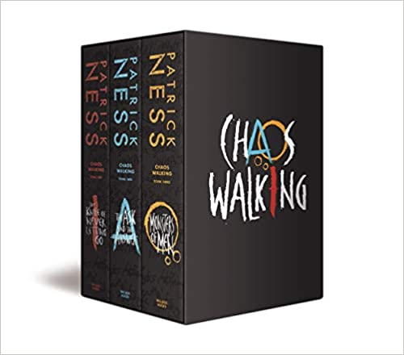

Confira abaixo as informações sobre o livro da Saga Mundo em Caos
Selecione a imagem acima para ser direcionado ao site de compras
Em um mundo pós-apocalíptico, uma infecção rara e perigosa causou o inimaginável: a morte de todas as mulheres. O mesmo germe fez com que os pensamentos dos homens se tornassem audíveis, e agora o caótico Ruído está por toda parte. É impossível guardar segredos no Novo Mundo. Todd Hewitt é o único garoto entre os homens da cidade de Prentisstown, e mal pode esperar para se tornar um deles. No entanto, o lugar esconde algo grave, capaz de mudar o futuro de Todd e do Novo Mundo para sempre. A apenas um mês de se tornar homem, um segredo impensável é revelado, e ele se vê forçado a fugir antes que seja tarde demais. Acompanhado por seu fiel escudeiro, o cachorro Manchee, ele empreende uma jornada repleta de perigos e se depara com uma criatura estranha e silenciosa: uma garota. Mas quem é ela? E por que não foi morta pelo germe como todas as mulheres? Publicado em mais de trinta países, Mundo em caos é o primeiro volume de uma distopia perturbadora sobre os laços que forjamos em situações extremas e traz à tona a infinita insensatez humana diante das diferenças. A adaptação cinematográfica da obra está prevista para o início do segundo semestre e terá Tom Holland e Daisy Ridley como protagonistas. A Intrínseca relança em uma edição especial, com tradução inédita e um conto extra, a série que consagrou Patrick Ness como um dos maiores nomes da literatura jovem.